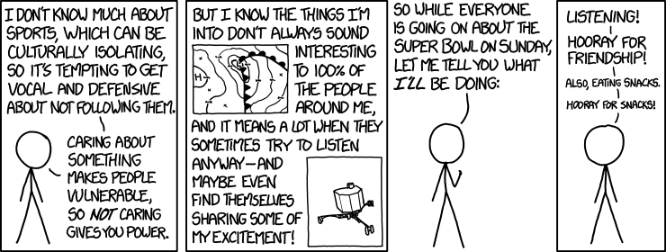

Super Bowl

Permanent link to this comic: https://xkcd.com/1480/
Image URL (for hotlinking/embedding): https://imgs.xkcd.com/comics/super_bowl.png
[[A single character delivers a monologue.]]
Character: I don't know much about sports, which can be culturally isolating, so it's tempting to get vocal and defensive about not following them.
Character: Caring about something makes people vulnerable, so NOT caring gives you power.
[[Two small graphics depicting weather fronts, and a spacecraft.]]
Character: But I know the things I'm into don't always sound interesting to 100% of the people around me, and it means a lot when they sometimes try to listen anyway--and maybe even find themselves sharing some of my excitement!
Character: So while everyone is going on about the super bowl on Sunday, let me tell you what I'LL be doing:
Character: Listening!
Character: Hooray for friendship!
Character (quietly): Also, eating snacks.
Character (quietly): Hooray for snacks!
{{Title text: My hobby: Pretending to miss the sarcasm when people show off their lack of interest in football by talking about 'sportsball' and acting excited to find someone else who's interested, then acting confused when they try to clarify.}}
 A webcomic of romance,
A webcomic of romance,